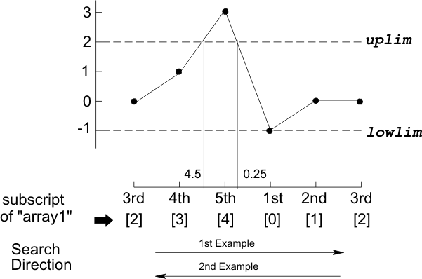

DSP_SETTLING
This API searches for the settling point in a specified array.
DSP_SETTLING searches for the cross point in src, which is a point between the following adjacent elements:
- src [i] is within the range, and the next element
- src [k] is out of the range
where within the range means between lower_limit and upper_limit; k is i+1 or i-1 depending on the search direction specified by direction.
The search direction is defined as follows:
direction = ASCEND
A(s), A(s+1), A(s+2),...A(N), A(1), A(2),...A(s)
direction = DESCEND
A(s), A(s-1), A(s-2),...A(1), A(N), A(N-1),...A(s)
where
- A(k+1) is src [k]
- s is start_point
- N is size.
The actual cross point is the point where the line between the adjacent elements crosses lower_limit or upper_limit, and is determined by linear interpolation and returned to DOUBLE variable result.
If the cross point is found between the first element and the last element of src, then result will be in the following range:
0 < result ≤ 1.0
If all the src elements are in or out of the range specified, that is, no cross point is found in src, -1.0 or -2.0 is returned to result.
This API is defined in the header file /opt/hp93000/soc/prod_com/include/MAPI/libdsp.h.
Syntax
DSP_SETTLING(ARRAY_I& src, DOUBLE *result, INT start, DOUBLE lowlim, DOUBLE uplim, INT direction); DSP_SETTLING(INT *src, DOUBLE *result, INT size, INT start, DOUBLE lowlim, DOUBLE uplim, INT direction); DSP_SETTLING(ARRAY_D& src, DOUBLE *result, INT start, DOUBLE lowlim, DOUBLE uplim, INT direction); DSP_SETTLING(DOUBLE *src, DOUBLE *result, INT size, INT start, DOUBLE lowlim, DOUBLE uplim, INT direction);
I/O |
Parameter |
Description / Range |
|---|---|---|
I |
src |
Source array |
O |
result |
Settling point |
I |
size |
Number of elements to be processed 1 ≤ size ≤ 2097152 size ≤ (size of source array) |
I |
start |
Start point of searching 1 (first data) ≤ start ≤ size (last data) |
I |
lowlim |
Lower limit |
I |
uplim |
Upper limit |
I |
direction |
Direction of searching ASCEND: Ascending (increasing subscripts) DESCEND: Descending (decreasing subscripts) |
Example
DSP_SETTLING(array1, &result_point, 5, 3, -1.0, 2.0, ASCEND);
Ifarray1 is as follows:
array1
[0] = -1
[1] = 0
[2] = 0
[3] = 1
[4] = 3
then, the following figure illustrates how the search is performed:

This API searches the first five elements of INT array array1. The search begins from array1[2] (3rd data), because start_point = 3. The search is performed in the following order, because direction = ASCEND:
array1[2], array1[3], array1[4], array1[0], array1[1], array1[2].
The range is specified by lower_limit = -1 and upper_limit = 2. Array1[3] is within range and array1[4] is above range, so the cross point will be at the intersection of upper_limit and the line connecting array1[3] (4th data) and array1[4] (5th data). The result, which is 4.5, is returned to DOUBLE variable result_point.
DSP_SETTLING(array1, &result_point, 5, 3, -1, 2, DESCEND);
This function is the same as example 1, except the search is performed in the opposite direction because direction = DESCEND.
Array1[0] is within range and array1[4] is above range, so the cross point will be at the intersection of upper_limit and the line connecting array1[4] (last data) and array1[0] (first data). The result returned toresult_pointwill be 0.25.